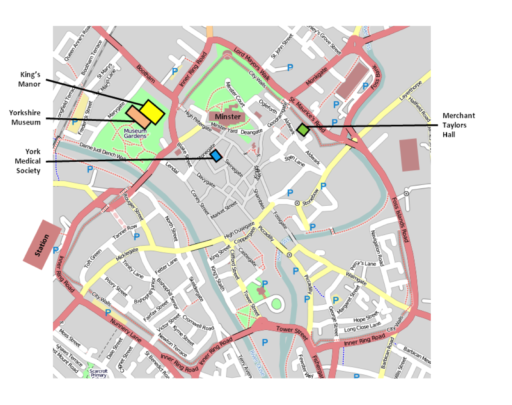

Third Circular
The SVPCA and SPPC/GCG meetings are just over a month away, and we hope you’re all looking forward to it as much as we are in York. This circular will provide, we hope, most of the information you will need about the conference. If you have any questions that aren’t answered by this circular, then please contact the organisers via email: southampton2015@svpca.org
EVENTS AND FIELD TRIPS
Monday 1st September - Field Trip to Saltwick Bay
The coach for the fossil-hunting trip to Saltwick Bay will leave at 10.30am from the bus stop in front of the York Art Gallery and the King’s Manor on St Leonard’s Place. Delegates should bring a packed lunch with them as there are no nearby places for purchasing food. Wellingtons or walking boots are recommended. We will spend the afternoon on the beach and aim to be back in York between 5 and 6pm. There are a few spaces left on the coach if delegates who haven’t already signed up would like to join the trip. If you wish to do this, please email the organisers by 15th August
Tuesday 2nd September - Ice-breaker Event
We are pleased to announce that the ice-breaker event will take place at the Yorkshire Museum and will be run in conjunction with the Yorkshire Philosophical Society. The museum will be open to delegates from 6.30pm for registration and a glass of wine. There will then be a lecture in the museum lecture theatre at 7.30pm entitled ‘Yorkshire and Palaeontology’. This will be given by Stuart Ogilvy and Sarah King, curators of natural history at the museum, and will be a look at the importance of Yorkshire to the field of palaeontology. Stuart and Sarah will also have some of the museum’s recently acquired specimens on display.
Wednesday 3rd September - Real Ale Tasting Event Following on from last years’ highly successful whisky tasting event, we will be holding a Real Ale Tasting event at which there will be the opportunity to sample a number of local ales. Tickets for the event will be £5 and will be available from the registration desk on arrival. The event will take place in the King’s Manor, hopefully in the courtyard if the weather is good.
Thursday 4th September - The Jones-Fenleigh Memorial Fund Auction
The auction for the Jones-Fenleigh fund will take place in the York Medical Society Rooms. As always, we rely on the generosity of delegates donating items for the auction, so please bring along any suitable books, reprints and so on. You will be able to drop off your items at the registration desk when you arrive.
Friday 5th September - Conference Banquet
The annual dinner will take place in the Merchant Taylors Hall on Friday 5th September, 7 for 7.30pm. A cash bar will be available at the hall.
Saturday 6th September - Field Trip to Rotunda museum, Ravenscar alum works and Whitby museum
The coach for the field trip to the quarry and the museums will leave at 10.00am from the bus stop in front of the York Art Gallery and the King’s Manor on St Leonard’s Place. The coach will first head to the Rotunda museum in Scarborough. From there we will proceed to the Ravenscar alum works, and lastly on to the Whitby museum. We aim to be back in York at 4pm. Delegates should bring a packed lunch and wear walking boots or strong shoes. There are one or two spaces left on the coach if delegates who haven’t already signed up would like to join the trip. If you wish to do this, please email the organisers by 15th August.
VENUES
The King’s Manor (yellow on map)
The SVPCA talks will take place in the Rahtz Lecture Theatre (K/133) in the King’s Manor (YO1 7EP). The poster session and the coffee breaks will take place in the Huntingdon Room (K/122), also in the King’s Manor. The entrance to King’s Manor is on St Leonard’s Place, near the junction with Gillygate and Bootham, just next to the York Art Gallery.
York Medical Society Rooms (blue on map)
The SPPC/GCG talks and the Jones-Fenleigh Memorial Fund auction will take place in the York Medical Society Rooms, 23 Stonegate (YO1 8AW). The entrance to the Medical Society Rooms is on the right hand side of Stonegate as you head towards the Minster just before the banner advertising Ye Olde Starre Inne..
The Yorkshire Museum (orange on map)
The icebreaker event and the SPPC stores tours will take place in the Yorkshire Museum (YO1 7FR). The museum should be accessed via the museum gardens. The entrance to the gardens is on Museum Street opposite Lendal..
Merchant Taylors Hall (green on map)
The conference banquet will take place in the Merchant Taylors Hall on Aldwark (YO1 7BX). From Goodramgate, the hall is about halfway along Aldwark on the left-hand side, just before the turning for St Andrewgate on the right.
ACKNOWLEDGEMENTS
Thanks are due to Hester Baverstock for the design of the 2014 logo and to the Palaeontological Association for a generous grant-in-aid towards the funding of this meeting.
